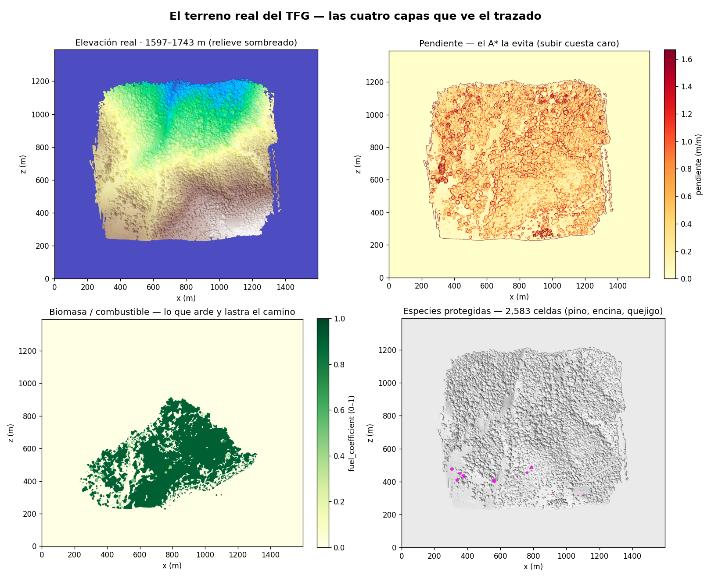
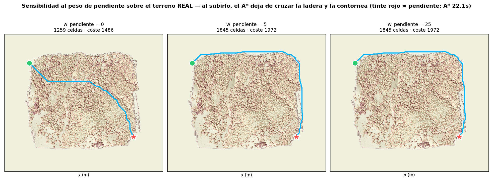

TFG · datos · índice
Las cuatro capas reales que ve el trazado
—elevación, pendiente, biomasa y especies protegidas— y el A* real
respondiendo a ellas. Nada sintético: son los datos del world.dat.
La página del A* explica el algoritmo sobre un terreno
inventado, ideal para entenderlo. Aquí, en cambio, se cargan los
datos reales del proyecto (heightmap de 16 bits para la
elevación y la pendiente, world.dat para el combustible,
especies_map.png para la biodiversidad) y se traza el A* de verdad
sobre ellos.

Estas son exactamente las matrices que consume la función de coste del A*
(w_pendiente·pendiente + w_biomasa·fuel + w_especies·especie + w_longitud·paso)
y las que usa la simulación de fuego — misma fuente, sin divergencias.

w_pendiente=0 el A* cruza la ladera por el camino más corto
(1259 celdas). Al subirlo, deja de subir cuesta y la contornea por el
borde (1845 celdas): más largo, pero acumula mucha menos pendiente. Es el
análisis de sensibilidad que pide la propuesta, sobre el terreno de verdad.
testing-lab/.venv/bin/python testing-lab/experiments/terreno_real.py.
El test tests/test_terreno_real.py verifica que el camino es contiguo
entre los extremos y que subir el peso de pendiente reduce la pendiente acumulada
(lo contornea). El A* es el real de api/pathfinding.py.